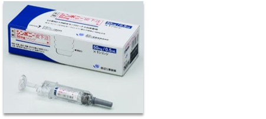

シンポニーのメッセージ
- 1.SIMは4週に1回の皮下注射製剤です
①病院にて確実な投与ができます
（手の変形のある患者、高齢者、認知症患者、自己投与できない患者）
②Bioの中で投与方法が最も簡便です - 2.SIMはMTX併用の場合、50㎎で治療開始後、効果不十分な場合には倍量の100㎎に増量できます
- 3.SIMはMTXが使用できない場合、単剤で初回から100㎎を使用できます
- 4.SIMは他のTNF阻害薬効果不十分の患者さんにも有効です
- 5.SIMは適応症に「関節の構造的損傷の防止を含む」があり、関節破壊への有効性も認められています
- 6.SIMはヒト型抗体のため抗体発現頻度が低いです
- 7.SIMは高額医療費制度が該当します
- 8.SIMは在宅自己注射管理指導料が取れるようになります
